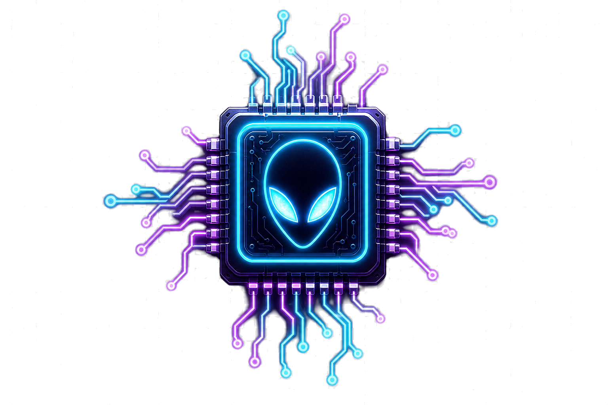

Game library
Scan Steam, Epic, GOG, installed games, and ROM folders into one neon shelf.

Alienizor+ Game browserAlienizor+
One Windows app for your game library, Live Lounge friends, and voice — neon and ready.
Version 1.1.0 · Released July 2026 · — installs
Windows installer recommended. Same app as version 1.1.0.
Chrome may warn about unsigned downloads — normal for indie apps. Click Keep anyway, then verify under Verify download.
About a minute. Windows SmartScreen may ask you to confirm on first run.
Alienizor+ Setup 1.1.0.exe above.
Library, lounge, and voice — built for playing with friends.
Scan Steam, Epic, GOG, installed games, and ROM folders into one neon shelf.
Servers with join passwords, text channels, and friend requests by lounge name.
Join voice channels with mic on and camera optional — up to 20 in a call.
Controller-friendly layouts plus Discord Rich Presence when you launch a game.
Compare the SHA-256 hash after downloading.
PowerShell: Get-FileHash ".\Alienizor+ Setup 1.1.0.exe" -Algorithm SHA256
Download Alienizor+ Setup, run it, then open Alienizor+ from the desktop shortcut. Use More info → Run anyway if SmartScreen appears.
Chrome flags new unsigned apps. Alienizor+ is safe — verify with the SHA-256 hashes above. In Chrome: download menu → Keep anyway.
Create a server with a 4–10 digit password, then they use Join server with code and enter the exact server name plus password once.
Game data lives under your Windows app data folder for Alienizor+. Uninstalling does not wipe your library by default.